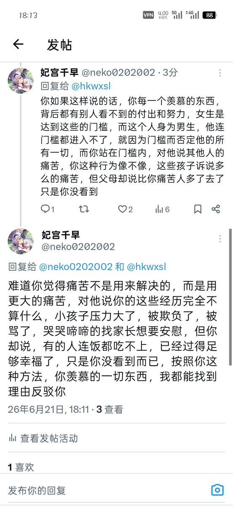

我不知道你怎么理解的，我并不偏向任何性别，两坨屎而已，但你这句话我感觉，完全就是孩子诉说自己多么辛苦，而家长只会说，你只看到自己的辛苦，世界上比你苦，吃不起饭，穿不起衣服，上不起学的人很多，你感到痛苦是看不到他们的困境，痛苦是来解决的，不是来攀比的


我并不知道你是怎样想的，按照你这样说，如果黑人羡慕白人，你就会说白天底层过得并不好，同样很痛苦，但是黑人羡慕的不是白人，而是白人这个肤色这个人种，他们知道就算成为白人也会很痛苦，也不会变得幸福，但是人种是个门槛，就算过得痛苦，也无法跨越 https://t.co/3x9Ci4FqeJ https://t.co/IBlTc97Vr8